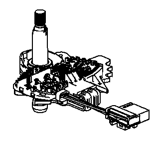
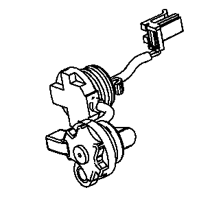
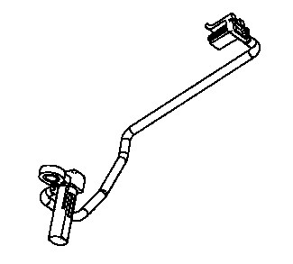

电子部件的说明
带换档轴位置开关的手动换档止动杆总成

变速器换档轴位置开关总成是一个滑动触点开关，安装在变速器壳体内的手动换档轴止动杆总成上。从变速器手动换档轴开关总成传送到变速器控制模块的5个输入信号，指示了变速器换档杆的位置。此信息用于发动机控制系统，并用以确定变速器换档模式。每一个输入信号的状态都可在故障诊断仪上显示。5个输入信号参数相应于信号A、信号B、信号C、信号P（奇偶性）和信号N（驻车档/空档起动）。
输入轴转速传感器 (ISS)

输入轴转速传感器 (ISS) 是一个霍尔效应传感器。将输入轴转速传感器安装至变速器壳体总成，并通过线束和连接器连接到控制电磁阀（带阀体和变速器控制模块）总成上。传感器朝向3-5倒档离合器活塞壳体齿状机加工面。传感器接收到输入轴转速传感器/输出轴转速传感器电源电压电路中，由变速器控制模块提供的8.3
- 9.3伏电压。随着3-5-R/4-5-6档离合器活塞壳体的转动，传感器根据3-5-R/4-5-6档离合器活塞壳体的机加工表面产生信号频率。此信号通过输入轴转速传感器信号电路传输至控制电磁阀（带阀体和变速器控制模块）总成。变速器控制模块使用输入轴转速传感器信号以确定管路压力、变速器换档模式、变矩器离合器
(TCC) 滑差转速和传动比。
输出轴转速传感器 (OSS)

输出轴转速传感器 (OSS) 是一个霍尔效应传感器。将输出轴转速传感器安装在控制阀体总成下的变速器壳体上，并通过线束和连接器连接至控制电磁阀（带阀体和变速器控制模块）总成。传感器朝向驻车齿轮齿状机加工面。传感器接收到输入轴转速传感器/输出轴转速传感器电源电压电路中，由变速器控制模块提供的8.3
- 9.3伏电压。随着前差速器分动箱主动齿轮的转动，传感器根据驻车齿轮的机加工表面产生信号频率。此信号通过输出轴转速传感器 (OSS) 信号电路传输至变速器控制模块 (TCM)。变速器控制模块使用输出轴转速传感器 (OSS) 信号以确定管路压力、变速器换档模式、变矩器离合器
(TCC) 滑差转速和传动比。